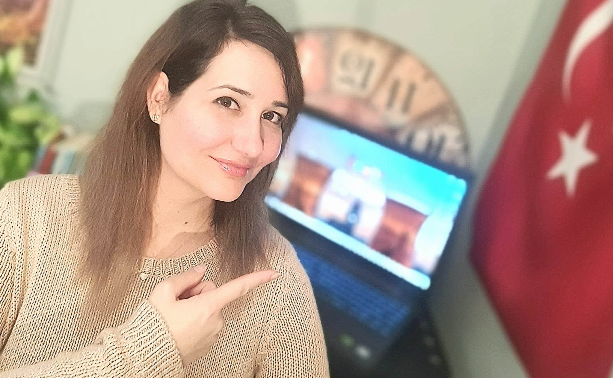
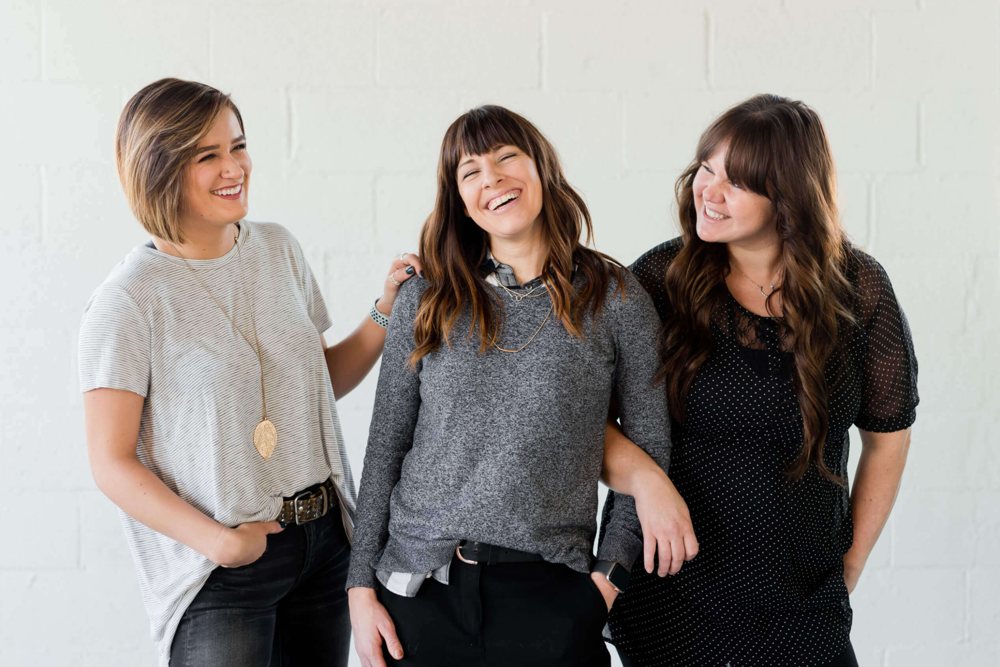
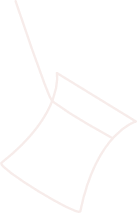
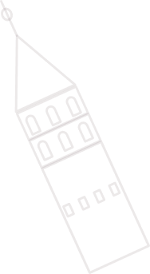
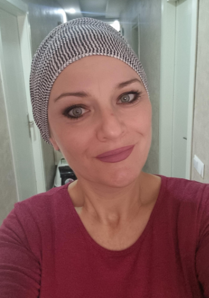

Merhaba, hoş geldin!
Te is ismered azt az érzést, amikor meg kellene szólalni törökül, de semmi nem jut eszedbe? Vagy tanulgattad már a szavakat, de nem sikerül őket összefűzni értelmes mondattá? Netán teljesen kezdő vagy? Ha hiszed, ha nem, magyar anyanyelvűként gyorsabban lesz sikerélményed, mintha más nyelvet tanulnál. Ennyi a trükk: a két nyelv logikailag és szerkezetileg is nagyon hasonlít egymásra. Egyénre szabott, beszédközpontú óráimon bebizonyítom, hogy a nyelvtanulás lehet szórakoztató, és még csak az otthonodat sem kell elhagyni hozzá. Több leszek, mint a töröktanárod: mentorként egy új világba foglak elkalauzolni.

Miért tőlem...

Közel két évtizede foglalkozom a török nyelvvel, 2010 óta pedig Törökországban élek és dolgozom. Az idegenvezetőként, török–magyar fordítóként, illetve tolmácsként megszerzett tapasztalataimmal olyan valós tudásra tettem szert, amit helyben lehet igazán elsajátítani. A nyelvtanításra mindig is úgy tekintettem, mint kulcsra: kulcsot adok ahhoz, hogy egy új világra nyiss ajtót. Hiszen valljuk be, egy nyelv megtanulása nem áll meg a szavak és nyelvtani formulák elsajátításánál, én abban hiszek, hogy a kultúra megismerésén keresztül lehet igazán közel kerülni a nyelvhez. Még emlékszem rá, amikor először varázsolt el a török nyelv. Magyarként, európai nyelvek környezetében hallottam meg ezt a különleges dallamú, misztikusnak hangzó nyelvet. Egyszerre volt ismerős és magával ragadó, de mégsem hasonlított egyik idegen nyelvre sem, amelyekkel addig találkoztam. A szenvedély azonnal elsöpört, ahogy egyre jobban beleástam magam a nyelv rejtelmeibe, és ez azóta sem változott. Közös bennünk, hogy én magam is idegen nyelvként sajátítottam el a törököt, ezért tökéletesen tisztában vagyok azzal, milyen nehézségek várnak rád. Két évtizedes tapasztalatot építettem be a tanóráimba, és rengeteg praktikus tanáccsal tudok neked szolgálni. Szinte a Törökországba való költözésem első napjától kezdve egy igazi török család tagja vagyok, így nemcsak napi szinten használom a nyelvet, de részese vagyok ennek a gazdag kultúrának is. Az itt megélt közvetlen tapasztalatokat, a kultúra mélyebb rétegeit is meg fogom neked mutatni az óráim alatt.

Török tanfolyam tipusok
Különbözőek vagyunk, különböző célokkal és tudásszinttel. A tanfolyamok anyagának kialakításakor azt tartottam szem előtt, hogy akkor is be tudj kapcsolódni, ha már egy bizonyos szinten vagy, és hogy az anyagok egymásra épüljenek. Az „A”, „B” és „C” szintek a klasszikus alapfokot, középfokot és felsőfokot jelentik, de ne aggódj, ha nem tudod, hol állsz éppen, segíteni fogok benne.



Török online magánórák
Ezt az óratípust ajánlom, ha azt szeretnéd, hogy csak rád figyeljek, és az órák maximálisan a te igényeidre szabva teljenek. Ideális lehet, ha nyelvvizsgára készülsz, állásinterjúd lesz, vagy ha valamilyen speciális témában szeretnél jobban elmélyedni. Akkor is tudok segíteni, ha már beszélsz valamilyen szinten, de sokat hibázol, és ezeket a hibákat szeretnéd korrigálni

Török online csoportos órák
Ezt az óratípust ajánlom, ha szeretnél másokkal is beszélgetni, és fontos, hogy egy online közösség tagja légy. A csoportos órák jól rendszerezett tematikára épülnek, és te is élvezheted a csoportos foglalkozások minden előnyét. Csoportban a hallás utáni szövegértés jobban fejlődik, és egymás hibáiból is tudtok tanulni. Mivel mindannyian hasonló szinten vagytok, egymással is meg tudjátok osztani a tanulás közben felmerült nehézségeket és a jó gyakorlatokat. Az a tapasztalatom, hogy a csapat mindig gyorsan összekovácsolódik, és igazi támogató közegben folyik a tanulás

Török online nyelvtanfolyam a saját ütemedbenk
Ezt az óratípust ajánlom, ha az élő órákat nem tudod beilleszteni a hétköznapjaidba, vagy ha nem szeretsz másokkal együtt tanulni, de képes vagy az önálló tanulásra a saját időbeosztásod szerint. A videóórákat a saját ritmusodban dolgozhatod fel, és ha elakadtál, egy zárt csoportban tudod a kérdéseidet feltenni. Fontos azonban, hogy legyen lehetőséged a gyakorlatba is átültetni a tanultakat, és tudj valakivel beszélgetni. Ha nincs rá mód, egyeztessünk a kiegészítő, beszédfejlesztő órák lehetőségéről
Akik már kipróbálták...

Sipos Szilvia
"A török nyelvet régóta szerettem volna már elsajátítani, de ha valaki, hát én nagyon válogatós vagyok, kit válasszak tanáromnak. Szerencsére rátaláltam Dórára és hamarosan el is kezdtük a tanulást. Először egyéni órák voltak, majd csoportosan tanultunk tovább. Dóra hihetetlenül türelmes és szuperül adja le a jól felépített tananyagokat, emellett vidámak, jó hangulatúak az órák. Alig várom, hogy kezdődjön a következő tanfolyam! 🥰 Egy másodpercre sem bántam meg a döntésem, hogy Dórát választottam. Szívből ajánlom Őt mindenkinek!"
Akik már kipróbálták...
Koller Kata
"Màr règòta szerettem volna törökül tanulni, de eddig nem került rá sor, viszont idén (2023) februàrban egy baràtnőm ajànlàsàra csatlakoztam Dòra teljesen kezdő, csoportos online nyelvtanfolyamàra. Nagyon vidàm, baràtsàgos a hangulat, az òràk tananyaga szàmomra nagyon èrthető, jòl felèpìtett rendszerben vannak. Dòra hihetetlenül türelmes ès fantasztikusan jòl tudja elmagyaràzni a nyelvtant. Àprilis vègèn folytatom a következő csoportos kurzust Dòràval. Őszinte szìvvel ajànlom mindenkinek!"
Akik már kipróbálták...
Vörös Veronika
"Merhaba! 🙂 Dórával 2023. februárjában kezdtem el kiscsoportos formában online tanulni. Teljesen kezdő szintről indultam. Az órák nagyon élvezetesek, nagyon jó a frontális és az interaktív részek aránya. Nagyon jó az, hogy az órák beszédcentrikusak, mert így hamarabb meg lehet érteni az elméletben tanultakat. A feladatok típusai változatosak (fordítások, videóval és hanganyaggal kapcsolatos feladatok, mondatalkotás, stb). A tananyag logikusan felépített, követhető, a házi feladat viszonylag sok, de ez szükséges is ahhoz, hogy elsajátítsuk az aktuális leckét. Nem elég az órán részt venni, sokat kell foglakozni önállóan is a tananyaggal, feladatokkal. A tőmondatok alkotásától kezdve haladunk az összetett mondatok megismerése, megtanulása felé. Sok érdekességet is megtudunk az órákon ami a török kultúrával, hagyományokkal, szokásokkal kapcsolatos. Ajánlom mindenkinek, aki kellő motivációval rendelkezik ahhoz, hogy megtanuljon törökül! Dórával sikerülni fog! 🙂"
Akik már kipróbálták...
Gruner Edina
"Én Törökországban élek. Azért szeretnék törökül tanulni, hogy a mindennapi életben tudjak kommunikálni a helyiekkel, a bevásárlást, az iskolát, az egészségugyi napi helyzeteket meg tudjam oldani tolmács segítsége nélkül. Dórai óráin nem csak nyelvtant és szavakat tanulunk, hanem a mindennapi élethez elengedhetetlen párbeszédeket gyakorlunk. Ha le kellene írnom egyszóval Dóra óráit akkor mindenképpen a professzionális szó jutna eszembe. Összeszedett, jól felépített, változatos. Mindenképpen őt ajánlanám azoknak akik törökül szeretnének tanulni."